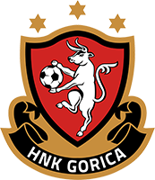
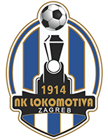

GNK Dinamo Zagreb
Adresa: Maksimirska 128, 10000 Zagreb
e-mail:dinamo@gnkdinamo.hr
Web:www.gnkdinamo.hr
Telefon:+385 1 2386 120, +385 1 2386 126 (škola)
Fax:+385 1 2312 316, +385 1 2386 127 (škola)
Predsjednik: Mirko Barišić
Predsjednica uprave: Vlatka Peras
Sportski direktor:
Trener:Sergej Jakirović
Trofeji:
- Prvak hrvatske: 24
- Superkup: 8
- Hrvatski kup: 16
- Kup velesajamskih gradova: 1

NK Osijek
Adresa: Wilsonova 2, 31000 Osijek
e-mail:nk.osijek@nk-osijek.hr
Web:nk-osijek.hr
Telefon:+385 31 570 300, +385 31 570 400
Fax:+385 31 570 400
Predsjednik: Ferenc Sakalj
Predsjednica uprave: Vladimir Čohar
Sportski direktor: Jose Boto
Trener:Zoran Zekić
Trofeji:
- Prvak hrvatske: -
- Superkup: -
- Hrvatski kup: 1

NK Rijeka
Adresa: Rujevica 10, 51000 Rijeka
e-mail: info@nk-rijeka.hr
Web: www.nk-rijeka.hr
Telefon:+385 51 612 031, +385 51 612 044, +385 51 612 030 (cen.)
Fax:+385 51 261 174, +385 51 612 055
Predsjednik: Damir Mišković
Predsjednica uprave: Luka Ivančić
Sportski direktor:Srećko Juričić
Trener:Željko Sopić
Trofeji:
- Prvak hrvatske: 1
- Superkup: 1
- Hrvatski kup: 6

HNK Gorica
Adresa: Hrvatske bratske zajednice 80, 10410 Velika Gorica
e-mail: info@hnk-gorica.hr
Web:www.hnk-gorica.hr
Telefon: + 385 1 6265 152
Fax:+ + 385 1 6265 232
Predsjednik: Nenad Črnko
Predsjednica uprave: Renato Ivanušs
Sportski direktor: Darko Blažinčić
Trener:Dinko Jeličić
Trofeji:
- Prvak hrvatske: -
- Superkup: -
- Hrvatski kup: -

NK Varaždin
Adresa: Zagrebačka 94, 42000 Varaždin
e-mail:info@nk-varazdin.hr
Web:www.nk-varazdin.hr
Telefon:+ 385 42 488065
Fax:+ 385 42 488067
Predsjednik: Dražen Vitez
Predsjednica uprave: Toni Dalić
Sportski direktor:Nikola Šafarić
Trener:Nikola Šafarić
Trofeji:
- Prvak hrvatske: -
- Superkup: -
- Hrvatski kup: -

NK Slaven Belupo
Adresa: M.P. Miškine 10, 48000 Koprivnica
e-mail:nk.slaven-belupo@kc.t-com.hr
Web:nk-slaven-belupo.hr
Telefon: +385 48 623 960, +385 48 624 073 (škola)
Fax:+385 48 210 327
Predsjednik: Robert Markulin
Predsjednica uprave:Aleksandar Aleksovski
Sportski direktor:
Trener:Ricardo Moniz
Trofeji:
- Prvak hrvatske: -
- Superkup: -
- Hrvatski kup: -

NK Istra
Adresa: Mate Balote bb, 52100 Pula
e-mail:info@nkistra.com
Web:https://nkistra.com
Telefon: +385 52 210 496, +385 52 637 970, +385 52 522 222
Fax:+385 52 393 429
Predsjednik: Branko Devide Vincenti
Predsjednica uprave: Mikel Lauzurica Evolet
Sportski direktor:Saša Bjelanović
Trener:David Catala
Trofeji:
- Prvak hrvatske: -
- Superkup: -
- Hrvatski kup: -
NK Rudeš
Adresa: Rudeška cesta 25, 10000 Zagreb
e-mail:info@nk-rudes.hr
Web:nk-rudes.hr
Telefon:+385 1 3860 844
Fax:+385 1 3860 923
Predsjednik: Josip Šimunić
Direktor:Stipe Čondrić
Trener: Davor Mladina
Trofeji:
- Prvak hrvatske: -
- Superkup: -
- Hrvatski kup: -

NK Lokomotiva
Adresa: Radoslava Cimermana 3, 10000 Zagreb
e-mail:nklokomotiva@nklokomotiva.hr
Web: www.nklokomotiva.hr
Telefon:+385 1 6553 203
Fax:+385 1 6553 348
Predsjednik: Tin Dolički
Direktor: Božidar Šikić
Sportski direktor:Silvijo Čabraja
Trener:Silvijo Čabraja
Trofeji:
- Prvak hrvatske: -
- Superkup: -
- Hrvatski kup: -
HNK Hajduk Split
Adresa: 8. Mediteranskih igara 2, 21000 Split
e-mail: info@hajduk.hr, hnkhajduk@hajduk.hr
Web:hajduk.hr
Telefon: +385 21 585 200, +385 21 585 201, +385 1 585 215 (škola)
Fax:+385 21 381 241
Predsjednik: Lukša Jakobušić
Sportski direktor:Mindaugas Nikoličius
Trener:Mislav Karoglan
Trofeji:
- Prvak hrvatske: 6
- Superkup: 5
- Hrvatski kup: 8